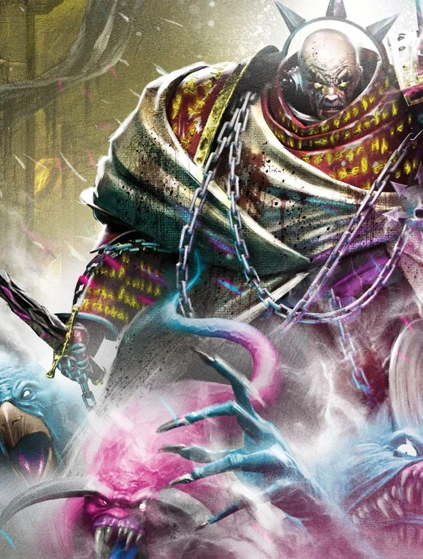
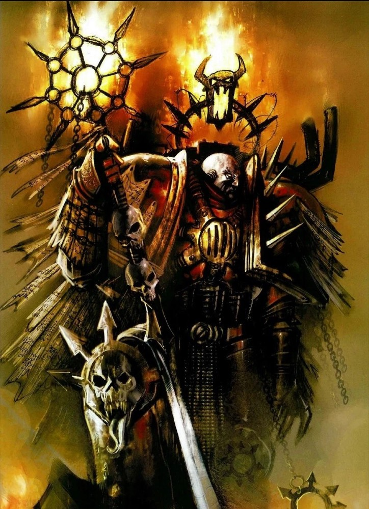

Kor Phaeron
| Kor Phaeron | |
|---|---|
| Black Cardinal of the Word Bearers | |
 Kor Phaeron amid summoned daemons | |
| Arch-deacon of the Covenant of Colchis | |
| Tenure | Before the Emperor's arrival on Colchis |
| First Captain and Master of the Faith of the Word Bearers | |
| Tenure | Great Crusade – Horus Heresy |
| Primarch | Lorgar |
| Black Cardinal, Dark Council of Sicarus | |
| Tenure | After the Heresy – present |
| Rival | Erebus |
| Born | M30, Colchis |
| Status | Active (Talledus War, M42) |
| Allegiance | Chaos; formerly the Imperium of Mankind |
| Other titles | Keeper of the Faith; Dark Cardinal |
| Relatives | Lorgar (foster son) |
| Wargear | Terminator armour with paired lightning claws |
| Known for | Raising Lorgar; leading the attack on Calth; the Talledus War |
Kor Phaeron, called the Black Cardinal and the Keeper of the Faith, is a leader of the Word Bearers Traitor Legion and the foster father of its primarch, Lorgar. A priest of the Covenant of Colchis, he found and raised the young primarch, and after the Emperor's arrival became First Captain of the XVII Legion although he had been too old to become a true Space Marine. With Erebus he led the Legion back to the worship of the Ruinous Powers in the decades before the Horus Heresy.[1][2]
Kor Phaeron commanded the Word Bearers' surprise attack on the Ultramarines at Calth, the largest single betrayal of the early Heresy. He failed to kill or corrupt Roboute Guilliman, who tore out one of his hearts. After the Heresy he became the senior Dark Apostle on the Dark Council of Sicarus, where he has contended with Erebus for control of the Legion for ten thousand years. In the Era Indomitus he led the invasion of the Ecclesiarchy's Talledus System.[3][4]
Early life
[edit]Kor Phaeron was born on Colchis, a desert world ruled by the theocratic Covenant, and raised in an orphanage. He became a priest of the Covenant, whose four Great Powers were the Chaos Gods under other names. He was exiled from Vharadesh, the capital, for urging more forceful conversions, and gathered a caravan of followers to preach among the low-caste nomads called the Declined.[1]
Among the Declined he found a golden-skinned child of extraordinary gifts, the primarch Lorgar. Seeing in him an instrument to overthrow the Covenant's ruling priests, Kor Phaeron had his followers kill the band that had found the boy, so that no one could reveal where he came from, and raised Lorgar as his own son. He taught him the Covenant's faith and treated him with cruelty. When Lorgar spoke of visions of a golden god in bronze armour, Kor Phaeron at first denounced him as a heretic.[1]
His hold over the boy weakened as Lorgar's following grew. When his own enforcers refused to beat Lorgar and turned on Kor Phaeron instead, Lorgar killed them and saved him. Afterwards Kor Phaeron stopped the beatings, proclaimed Lorgar the Bearer of the Word, and became his arch-deacon and chief adviser. He kept his own leadership of the Dark Heart, a sect devoted to the old gods, secret from his son.[1]
The Schism Wars
[edit]Lorgar's preaching split the Covenant. The six-year civil war that followed, the Schism Wars, ended when Lorgar's Godsworn stormed the Cathedral of Illumination in Vharadesh. Kor Phaeron fought for his son throughout, and after the victory admitted to Lorgar that he still believed in the old gods, while granting that the One God Lorgar foresaw might be the greatest of them.[1]
Great Crusade
[edit]The Emperor of Mankind reached Colchis with Magnus the Red and gave Lorgar command of the XVII Legion, then the Imperial Heralds. Lorgar wanted his foster father beside him, but Kor Phaeron was too old to receive gene-seed. Rejuvenat treatments, bionic grafts and limited gene-forging made him far more than human but less than a Space Marine, and many in the Legion called him a false Astartes. He was nonetheless made First Captain and commander of the 1st Company, and one of the Legion's first Chaplains, by Lorgar's will.[2]
The Word Bearers converted the worlds they conquered to the worship of the Emperor as a god, and conquered slowly. In response, the Emperor ordered the Ultramarines to destroy the Legion's model city of Monarchia on Khur, and then forced Lorgar and his hundred thousand warriors to kneel in its ashes. Kor Phaeron and Erebus used the humiliation to turn Lorgar to the gods of Chaos. They went with him on the pilgrimage that took him into the Eye of Terror, and directed the secret corruption of the Legion in the decades that followed.[1][2]
Horus Heresy
[edit]Calth
[edit]As part of Horus's plan, the Word Bearers were ordered to join the Ultramarines at Calth in Ultramar, nominally for a joint campaign against the Orks. The fleet included the battleship Furious Abyss, built in secret by the traitor Fabricator-General Kelbor-Hal to destroy the Ultramarines. Kor Phaeron commanded the attack. The Word Bearers struck the Ultramarines' fleet at anchor, turned Calth's orbital weapons on the planet and destabilised its star, killing millions.[3]
On Calth, Kor Phaeron tried to corrupt Guilliman with a shard of the Anathame, the weapon that had felled Horus on Davin. Guilliman tore out one of his two hearts. Kor Phaeron fled to his flagship, the Infidus Imperator, and drew Guilliman's flagship Macragge's Honour into the warp after him before turning to fight. The Infidus Imperator was destroyed, and Kor Phaeron escaped by cutting a passage through the warp with an athame, emerging at the daemon world of Sicarus.[3]
By the traitors' measure Calth was a partial success: Erebus raised the Ruinstorm, which cut Ultramar off from Terra. It was also a failure. Guilliman lived, and half the Word Bearers fleet committed at Calth was lost, along with tens of thousands of legionaries including many of the Gal Vorbak.[3]
The Shadow Crusade
[edit]Kor Phaeron served in the Shadow Crusade, the campaign of the Word Bearers and World Eaters against Ultramar under Lorgar and Angron. He is not recorded as a commander at the Siege of Terra.[3]

After the Heresy
[edit]After the Great Scouring the Word Bearers settled on Sicarus in the Eye of Terror and on the forge world of Ghalmek in the Maelstrom. Lorgar became a daemon prince and withdrew into contemplation, and the Legion is ruled in his absence by the Dark Council of Dark Apostles. Kor Phaeron, as Black Cardinal and Keeper of the Faith, is its senior member, and his struggle with Erebus has shaped the Legion's policy. He once tried to remove Erebus through the secret society called the Brotherhood; when the Dark Apostle Marduk betrayed the plot, Kor Phaeron disowned it and kept his seat.[1]
From Sicarus the Legion sponsors cults and covens across the Imperium and wages wars of faith meant to replace the worship of the Emperor with the worship of the Dark Gods.[1]
Talledus War
[edit]In the Era Indomitus, Kor Phaeron led a great invasion of the Talledus System in the Veritus Sub-sector of the Segmentum Solar, a holding of the Ecclesiarchy whose capital is the Cardinal world of Benediction. The Word Bearers allied with an Iron Warriors warband under the Warpsmith Etrogar and a Night Lords fleet under Yharas Kine. The war was fought on Benediction, on the fortress world of Ghreddask and in the asteroid belt called the Tears of the Emperor.[4]
Kor Phaeron's forces nearly took the cathedral-city of the Grand Honorificum on Benediction. They were turned back when the faith of the defenders called up the spirits of the sacred dead, an event now remembered as the Saints' Wall, which banished many of his daemons and allowed a demi-company of Salamanders to cut his army in two. Imperial forces have held every front since, but the war is not over.[4]
Character
[edit]Kor Phaeron is ambitious, cruel and a zealot, and is said to lead in battle with a ferocity unmatched even in his Legion. Those who knew him at the time of the Crusade believed that he came to love Lorgar in his own way, while never ceasing to see him as a means to power. His status as a half-made Space Marine left him resented within the Legion, a resentment he has met with fear rather than favour.[2]
See also
[edit]References
[edit]- ^ a b c d e f g h Liber Haereticus: The Bearers of the Word (rev. M41). Ordo Malleus (sealed).
- ^ a b c d Liber Primarchus (M32, revised M41). Administratum Archive, Terra.
- ^ a b c d e Chronicles of the Heresy (sealed). Logos Historica Verita, Terra.
- ^ a b c Records of the Indomitus Crusade (ongoing). Office of the Lord Commander.